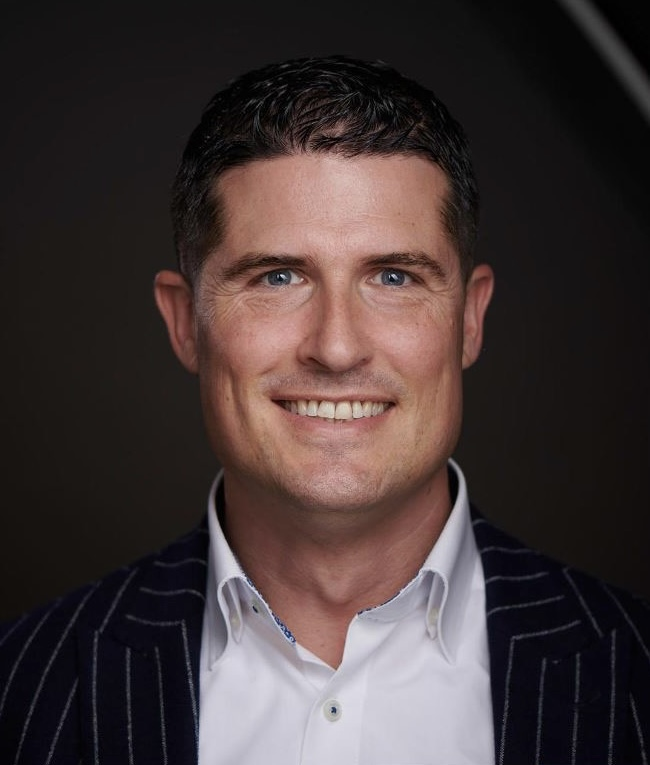
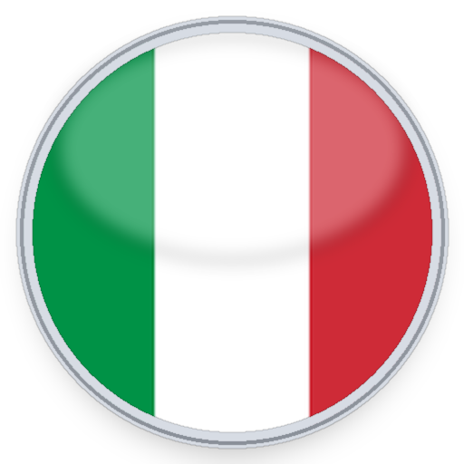
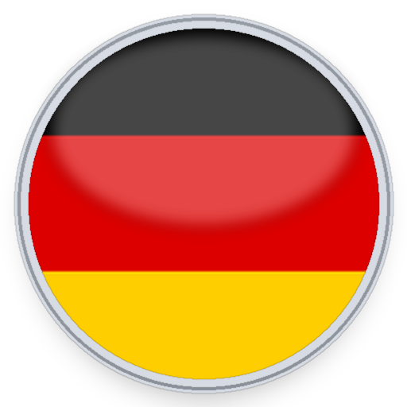
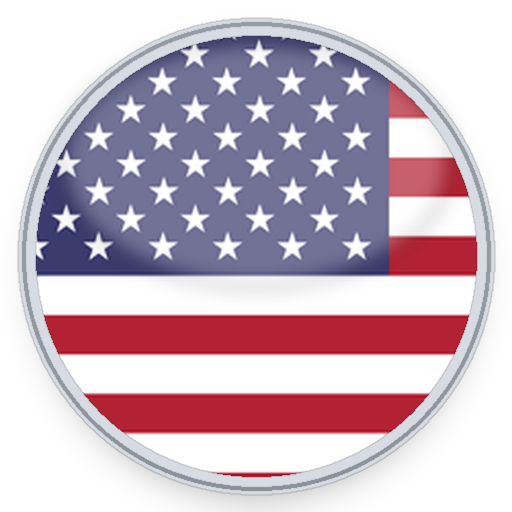
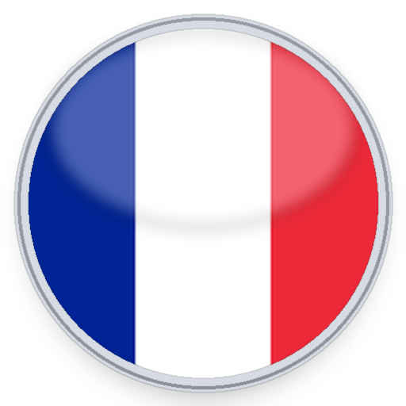
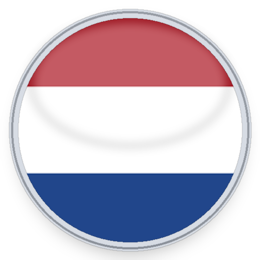
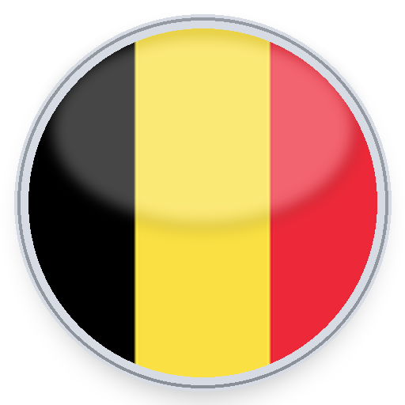

About Tom de Winter
Experience, insight and execution across automotive, engineering and international business.

Over the past 26+ years, I have built my career within the automotive industry, working across OEM, aftermarket (IAM) and international distribution environments.
My background started in engineering at Ferrari S.p.A., Maranello (IT), providing a strong technical foundation and deep understanding of automotive products and systems.
Over the past two decades, I developed into a commercial professional, operating at the intersection of business development, strategy and execution.
This combination allows me to bridge a critical gap within many organizations: the disconnect between technical expertise and commercial success.
Career background across the automotive value chain
My experience combines OEM, OES / IAM manufacturing and international distribution — creating a broad perspective across engineering, commercial development and international growth.
OEM car manufacturers

Ferrari S.p.A.
BMW Group AG
General MotorsOES / IAM parts manufacturers

Sogefi Filtration SA
ABS All Brake Systems B.V.International Trade

AutodistributionLanguages
Dutch, English and German.
What you gain
You don’t just hire expertise — you gain a partner who understands how to connect technology, markets and business.